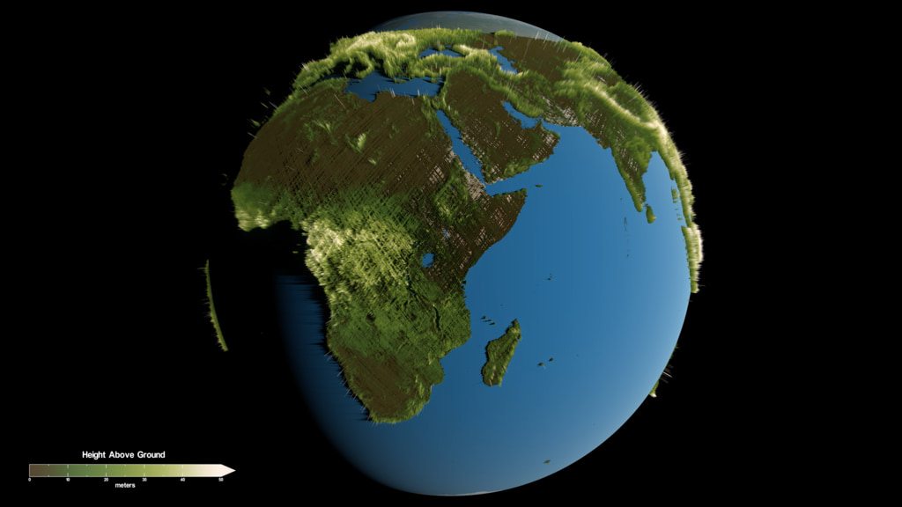

FIELD STUDY / NASA GEDI
The Invisible
Forest.
A laser passed over Brazil. Listen to what came back, one footprint at a time.
SONIC LENS
Follow the return.
Hold one height range steady, then compare what the laser returned across six sampled locations.
GEDI V001 · BEAM010118 APR 2019 · BRAZIL
Sound Studio
Tones use a fixed 440 Hz pitch. Gain is 0.32 × the square root of the return fraction. Each metre advances the vertical scan by 0.13 seconds at 1×. The track scan advances at 65 metres per playback second at 1×.
Observation evidence and sources
NASA SVS 4950
What came back
GEDI measures reflected laser light from a footprint. The tones represent a share of the corrected signal above a noise threshold, within a fixed −10 to 22 m window relative to estimated ground.
Terrain, reflectance and vegetation shape the return. This signal alone cannot identify leaf density, tree count or biomass. Between footprints, GEDI provides no measurements for this pass.
We subtract the instrument’s background estimate and three noise standard deviations, then sum the positive remainder into one-metre bands. We divide by the sum within the same height window for each footprint.
Explore the six footprints